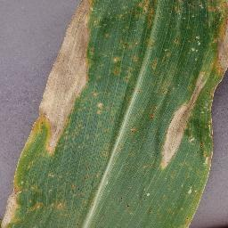

Take a photo of a leaf from your crop. We'll tell you what disease it has, how serious it is, what medicine to use, and how much crop you could lose if you wait.

Wheat — Leaf Rust
87% sure
You could lose 30% of your crop if not treated. Use Propiconazole spray within 5–7 days.
Click a clear picture of one leaf in daylight.
We check the leaf and tell you the disease.
See what to spray and how much crop is at risk.
Every answer comes with how sure we are, how far it has spread, and what it could cost you.
Measured on the leaf itself, not looked up in a table.
Propiconazole spray within 5–7 days.
A blurry, dark or leafless photo gets "please retake". A photo that doesn't look like that crop gets "not sure", never a guessed disease.
Photo checked before it is diagnosed.
A heatmap shows which part of the leaf decided the answer.
Every crop's accuracy comes with its confidence interval.
| Crop | Accuracy [95% CI] |
|---|
For potato late blight and rice blast, the risk for the past 2 days, today and the next 3.
Areas appear only when at least 3 different farmers reported there. Your exact spot is never shown.
Download a one-page field report with the diagnosis, the satellite view and a verify link.
Wheat — Leaf Rust
SHA-256 verify link on the last page.